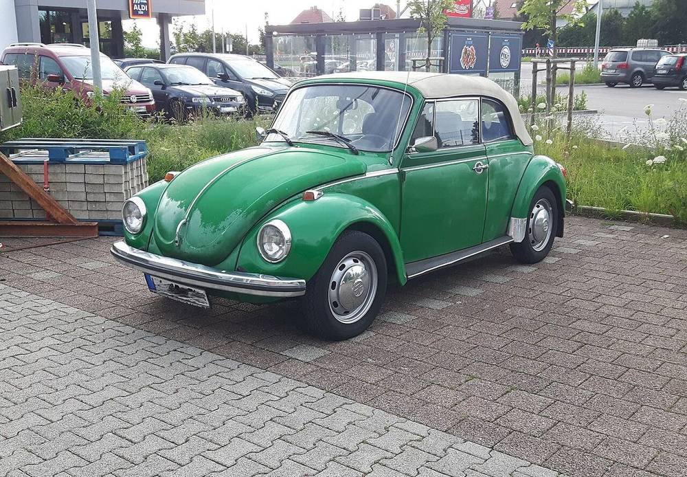
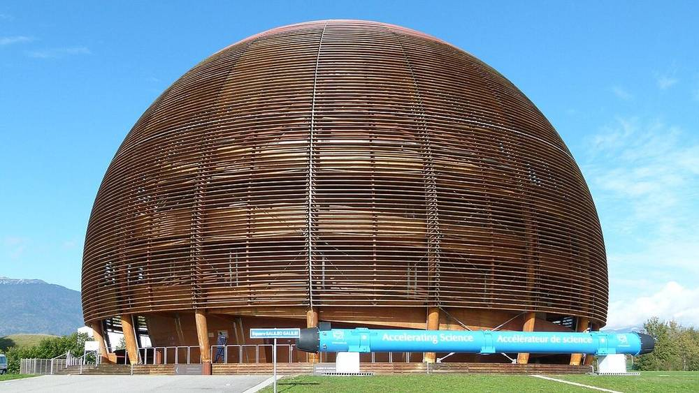
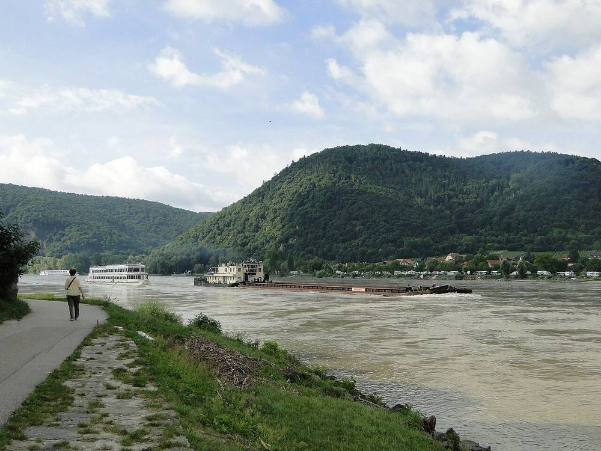
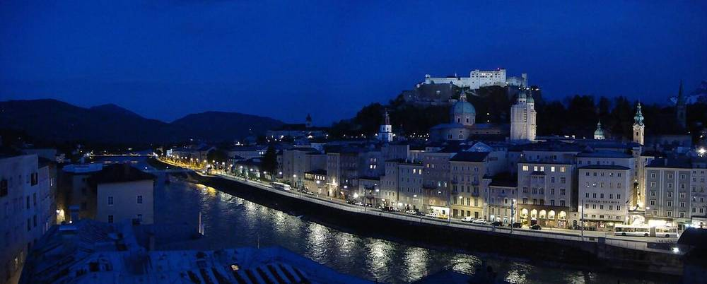
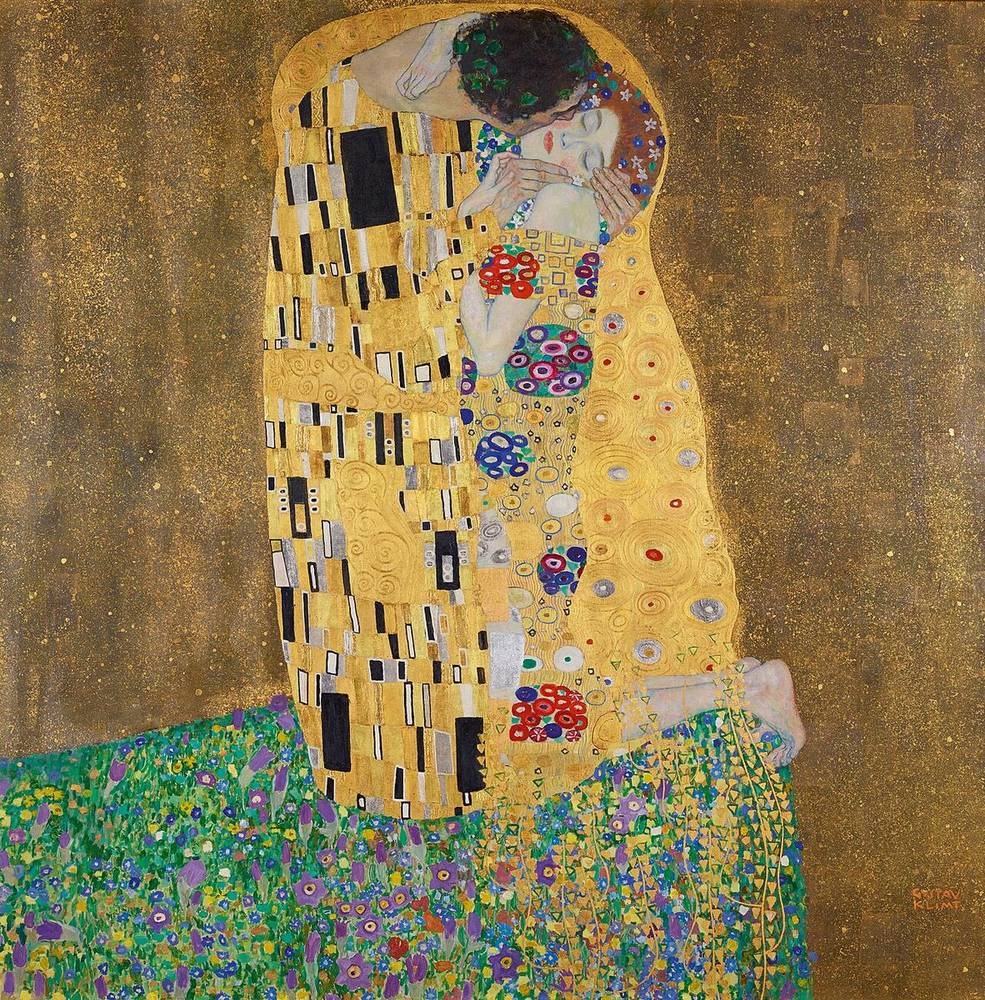
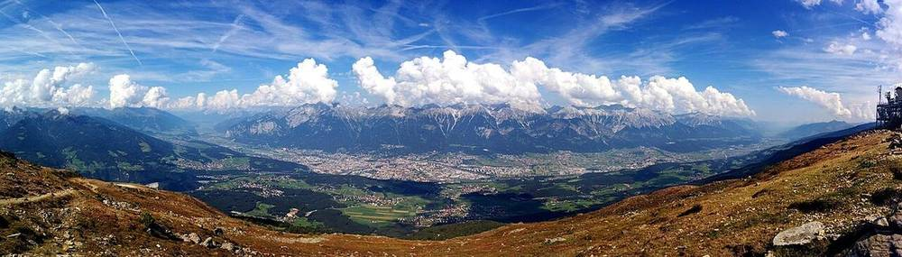

Germania, Svizzera e Austria

Germania: carta d'identitàBundesrepublik, 16 Länder, Berlino
La Germania (Repubblica Federale Tedesca) è compresa tra le Alpi Bavaresi a sud e il Mare del Nord e il Mar Baltico a nord. A dividere i due mari c'è la penisola dello Jutland, dove passa il confine con la Danimarca. Prende il nome dagli antichi Germani, che abitavano queste terre già al tempo dei Romani.
Lo stato in cifre
superficie 357 582 km² · popolazione 82 792 351 ab. · densità 232 ab./km² · popolazione urbana 77,3% · speranza di vita: maschi 78,6, femmine 83,5 anni · lingua tedesco · moneta euro · PIL pro capite 48 264 $ · repubblica federale · capitale Berlino (3,6 milioni nella città, 4,5 nell'agglomerato).
Come funziona lo stato
È una repubblica federale (Bundesrepublik) divisa in 16 Länder, stati regionali autonomi. Il Parlamento ha due Camere, Bundestag e Bundesrat, con il potere legislativo; il potere esecutivo è del Governo, guidato dal primo ministro, il Kanzler (cancelliere), capo del partito di maggioranza. La Germania è tra gli stati fondatori dell'UE e ha adottato subito l'euro.
Impara le parole: Bund significa «patto»: Bundesrepublik, Bundestag, Bundesrat ricordano che la Germania è una federazione di stati. Anche il campionato di calcio si chiama Bundesliga.
Germania: il territorioAlpi Bavaresi, Mittelgebirge, Bassopiano · Reno, Elba, Danubio
Da sud a nord la Germania ha tre fasce: le montagne giovani (Alpi Bavaresi), le montagne antiche (Mittelgebirge) e le pianure (Bassopiano Germanico).
Sud: le Alpi Bavaresi
Montagne alte e giovani; qui c'è la cima più elevata, lo Zugspitze, 2962 m. Nella regione alpina si trova il lago più importante, il Lago di Costanza, di origine glaciale, al confine con Svizzera e Austria.
Centro: i Mittelgebirge
«Montagne di mezzo»: antiche catene di modesta altitudine. La Selva Nera (da cui nasce il Danubio), il Massiccio Renano (quattro piccole catene ai lati del Reno), il Giura, i Monti Metalliferi (al confine con la Repubblica Ceca) e il massiccio dello Harz.
Nord: il Bassopiano Germanico
Attraversato da fiumi in gran parte navigabili: il Reno (con gli affluenti Meno, Mosella e Ruhr), il Weser, l'Elba e l'Oder (confine con la Polonia).
Il Danubio e i canali
Il Danubio scorre da ovest a est ai piedi delle Alpi e sfocia nel Mar Nero dopo aver attraversato altri nove stati. Mare e fiumi sono collegati da canali artificiali: il canale di Kiel (tra Mare del Nord e Baltico) e il canale RMD (Reno-Meno-Danubio).
Le coste
Sul Mare del Nord sono basse, sabbiose e orlate da piccole isole, le Frisone orientali e settentrionali. Sul Baltico hanno profonde baie e grandi isole.


Germania: clima e vegetazioneatlantico, continentale, alpino
Il clima varia a seconda dell'altitudine e della distanza dal mare. Tre zone, tre climi.
Nord: clima atlantico
Inverni freddi e umidi, raramente nevosi, perché arrivano forti venti dal mare; estati calde e ventilate. L'escursione termica annua è ridotta (il mare mitiga) e le precipitazioni sono regolari tutto l'anno. Vegetazione spontanea: pascoli, brughiere e latifoglie.
Centro: clima continentale
Procedendo verso sud-est l'escursione termica aumenta: inverni lunghi e freddi, estati calde. Le precipitazioni sono scarse. Vegetazione: latifoglie, in gran parte sostituite dalle coltivazioni agricole.
Sud: clima alpino
Inverni lunghi e rigidi con abbondanti nevicate; estati brevi e fresche con piogge frequenti. Il paesaggio tipico è il bosco di conifere, come nella Selva Nera.
Il climogramma di Berlino: temperature medie sotto lo zero in gennaio e intorno ai 18 °C in luglio; precipitazioni distribuite su tutto l'anno, mai abbondanti.
Germania: l'economiaindustria, energia, Borsa di Francoforte
Occupati per settore: primario 1,2%, secondario 27,3%, terziario 71,4%. La Germania è la prima potenza industriale d'Europa.
Primario
L'agricoltura non è il settore trainante ma è moderna e meccanizzata: cereali, avena, luppolo, patate e piante industriali come barbabietola da zucchero e colza. Le attività più redditizie sono l'allevamento di suini e bovini e la pesca nel Mare del Nord.
Energia e ambiente
Nel 2011 il governo ha deciso la chiusura progressiva dei reattori nucleari e una campagna per le energie rinnovabili (eolico e solare), che danno oggi più del 34% della produzione. Le fonti: carbone 34,3%, rinnovabili 34,1%, nucleare 18,9%, gas 5,7%, petrolio 3,1%. La Germania è all'avanguardia nel risparmio energetico e nella raccolta differenziata e conserva grandi foreste e molti parchi naturali. L'inquinamento resta grave nella zona orientale, dove fino al 1990 le industrie andavano a carbone; le miniere chiuse sono state bonificate e trasformate in musei e centri culturali, come Zollverein a Essen.

Secondario
L'industria ha avuto uno sviluppo straordinario nel Novecento nonostante due guerre mondiali. È la più importante d'Europa in meccanica, ottica, elettronica, chimica: marchi come Volkswagen-Porsche, Daimler Benz/Mercedes, BMW, Siemens, Basf, Bayer, Henkel, Bosch. Dopo il crollo dell'URSS la Germania ha esportato tecnologia e beni nei paesi dell'Europa orientale e balcanica.
Terziario
È sviluppato soprattutto a supporto dell'industria: i trasporti (l'asse principale è il Reno, affiancato da autostrade e ferrovie), il commercio (importa combustibili fossili e materie prime, esporta macchinari e beni di consumo), banche e assicurazioni. La Borsa di Francoforte è tra le maggiori del mondo; Francoforte è anche sede della Banca Centrale Europea (BCE), che guida la politica monetaria dell'euro. Si vede ancora la differenza tra Est e Ovest: prima della caduta del Muro a Ovest c'era il capitalismo, a Est il comunismo.
Impara le parole: Volkswagen deriva da Volk (popolo) e Wagen (automobile): «macchina del popolo».
Germania: popolazione, città e culturaBerlino, Amburgo, Monaco, Francoforte · luterani e cattolici
Con più di 80 milioni di abitanti la Germania è lo stato più popoloso dell'UE. La maggior parte vive nella Germania occidentale, soprattutto nella valle del Reno.
Una rete di città: il modello policentrico
Tante città medio-grandi, con risorse e ricchezza distribuite in modo equo. Le ragioni sono storiche: la lunga frammentazione in piccoli stati, l'unità raggiunta solo nell'Ottocento, la divisione tra Germania Occidentale e Orientale durata oltre quarant'anni, e l'attuale federalismo, con ogni regione molto autonoma.
Berlino · 3,6 milioni
La capitale federale; l'agglomerato urbano supera i 4,5 milioni.
Amburgo · 1,8 milioni
Sull'estuario dell'Elba, sul Mare del Nord: il principale porto della Germania.
Monaco · 1,5 milioni
Centro industriale e culturale della Baviera: stabilimenti BMW, famosa per l'Oktoberfest, la grande fiera della birra.
Francoforte · 0,75 milioni
Capitale finanziaria e commerciale; il suo aeroporto è tra i più importanti scali europei.
Altre città rilevanti: Colonia (1,1 milioni), Stoccarda, Düsseldorf, Dortmund, Essen, Brema (tra 570 000 e 630 000).
Cultura e società
La lingua è il tedesco. La religione più diffusa è il cristianesimo: luterani al centro-nord, cattolici al sud; la seconda religione è quella islamica, diffusa fra le comunità turche. Dopo il nazionalismo e il militarismo dei secoli scorsi, oggi i giovani guardano al lavoro, all'ambiente, ai diritti civili e a nuove forme culturali: il vecchio aeroporto di Berlino Tempelhof è diventato un parco pubblico con orti urbani e concerti.
I problemi sociali
Lo sviluppo economico ha attirato lavoratori turchi, italiani, polacchi, serbi: gli stranieri sono più del 12% della popolazione e non mancano le difficoltà di integrazione. Dal 2015 la Germania ha aperto le frontiere ai profughi in fuga dalla Siria: più di un milione e mezzo in un anno e mezzo. Questo ha alimentato il malcontento nelle regioni orientali più povere, dove sono cresciuti i partiti dell'estrema destra.
BerlinoPorta di Brandeburgo, Muro, Reichstag, Isola dei Musei
Berlino è una città di grandissimi spazi, in continua trasformazione. Ovunque ci sono tracce della sua storia, come il Memoriale dell'Olocausto, in ricordo degli ebrei uccisi durante il nazismo.
Una storia in date
- Seicento: i sovrani prussiani costruiscono il Castello di Charlottenburg, residenza barocca.
- Settecento: la Porta di Brandeburgo, uno dei simboli della città.
- 1871: da capitale della Prussia, Berlino diventa capitale della Germania unificata.
- Seconda guerra mondiale: bombardata dagli alleati angloamericani; alla fine della guerra viene divisa fra le due repubbliche tedesche.
- 1961-1989: un muro separa Berlino Est e Berlino Ovest. Oggi una parte è conservata in memoria: la East Side Gallery, coperta di graffiti.

La città oggi
Sul fiume Sprea, al centro, c'è l'Isola dei Musei, con un enorme patrimonio artistico. Grandi architetti moderni hanno lavorato prima a Berlino Ovest (la cupola di vetro del Reichstag, il parlamento) e dopo la riunificazione in tutta la città: Potsdamer Platz, «terra di nessuno» ai tempi del Muro, è stata interamente ricostruita. Berlino Est conserva lo stile sovietico: enormi palazzi di cemento e grandi viali rettilinei intorno ad Alexanderplatz, dove svetta la Fernsehturm (torre della televisione). Oggi Berlino è un centro culturale e artistico all'avanguardia che attira giovani da tutta Europa.
La Germania ieri e oggiBismarck, il Terzo Reich, le due Germanie, Merkel
I confini della Germania sono cambiati moltissime volte, sia a est sia a ovest.
Età medievale e moderna
Nella seconda metà del X secolo i principi tedeschi (Sassonia, Franconia, Svevia) costituiscono il Sacro Romano Impero Germanico. Le guerre di religione tra Cinquecento e Seicento impediscono l'unificazione.
Ottocento
A metà secolo la Germania è ancora divisa in piccoli stati. Il cancelliere Otto von Bismarck guida la Prussia, forte economicamente e militarmente, e nel 1871 unifica la Germania sotto la famiglia degli Hohenzollern (il re Guglielmo I diventa imperatore).
Età contemporanea
Sconfitta nella Prima guerra mondiale, in crisi, la Germania vede crescere il Partito Nazionalsocialista di Adolf Hitler, che nel 1933 instaura un regime totalitario, il «Terzo Reich», che perseguita e uccide milioni di persone, soprattutto ebrei. Le mire di Hitler portano alla Seconda guerra mondiale (1939-1945), che finisce con una sconfitta drammatica e distruzioni ovunque.
Le due Germanie
A ovest la Repubblica Federale Tedesca (RFT, modello capitalistico degli USA), a est la Repubblica Democratica Tedesca (RDT, sistema socialista sotto l'URSS). La divisione, che tagliava anche Berlino, dura fino al 1989. Nel 1990 la Germania è riunificata: lo stato più esteso e più popoloso dell'UE. L'ex Est era però molto arretrato: industrie di stato ristrutturate e privatizzate, grandi investimenti, e una forte emigrazione dall'Est verso l'Ovest.
Attualità
Dal 2005 la cancelliera è Angela Merkel (CDU, cristiano-democratici): con le sue riforme la Germania ha superato meglio di altri la crisi del 2008 ed è oggi uno dei paesi trainanti dell'UE.
Album
Il castello di Neuschwanstein
In Baviera, vicino all'Austria, tra le fortezze più visitate d'Europa. Lo fece costruire alla fine dell'Ottocento il re Ludovico II di Baviera in omaggio al compositore Richard Wagner: molte sale sono arredate come scene delle sue opere.
Il Muro di Berlino
Cinta di cemento armato che divise la città dal 1961 al 1989. Quasi tutto distrutto, ne restano tre tratti: il più famoso è la East Side Gallery.
Macchine per il popolo
La Volkswagen fu fondata nella prima metà del Novecento come industria di stato per produrre un'utilitaria, la Typ 1: in Italia la chiamiamo Maggiolino.
Albert Einstein
Nato in Germania nel 1879, Nobel per la Fisica nel 1921. Negli anni Trenta si trasferì negli Stati Uniti. La sua fama è legata alla teoria della relatività, sulla luce e sulla struttura dello spazio e del tempo.


Svizzera: il territorioAlpi, Mittelland, Giura · 26 cantoni
La Svizzera confina a ovest con la Francia, a nord con la Germania, a est con l'Austria e il Liechtenstein, a sud con l'Italia. È una «cerniera» tra i maggiori stati europei: il fulcro degli scambi tra Europa occidentale e orientale, settentrionale e meridionale.
Lo stato in cifre
superficie 41 291 km² · popolazione 8 542 323 · densità 207 ab./km² · urbana 73,8% · speranza di vita 81,4 / 85,4 · lingue tedesco, francese, italiano, reto-romancio · moneta franco svizzero · PIL pro capite 82 950 $ · repubblica federale · capitale Berna (133 791 ab.).
Come funziona
Repubblica federale di 26 cantoni con notevole autonomia. Non fa parte dell'UE e ha come moneta il franco svizzero; ha aderito all'accordo di Schengen.
Tre fasce di territorio
Le Alpi (sud)
Le Alpi Pennine (Cervino 4478 m, Monte Rosa 4634 m), le Alpi Bernesi (Jungfrau 4158 m) e le Alpi Retiche (Bernina 4049 m). Nelle Alpi Lepontine, dal Massiccio del San Gottardo, nascono il Rodano (verso la Francia), il Reno (verso la Germania) e il Ticino (verso l'Italia). L'Inn, affluente del Danubio, nasce al confine con l'Italia.
Il Mittelland (centro)
Altopiano ricco di laghi: Lago di Ginevra, di Neuchâtel, dei Quattro Cantoni, di Zurigo e di Costanza. È dove vive la maggior parte della popolazione.
Il Giura (nord)
Le colline del Giura, al confine con la Francia.

Clima e natura
Clima alpino, con lunghi inverni freddi ed estati fresche, ma più mite sulle rive dei laghi. Paesaggio naturale di boschi e pascoli. Nonostante turismo e industria, la Svizzera ha protetto il suo patrimonio: in Engadina (Cantone dei Grigioni) nacque il primo parco nazionale delle Alpi.

Svizzera: economia e vitaorologi, banche, quattro lingue, CERN
Montagne e clima non favoriscono l'agricoltura: nei pochi fondovalle si coltivano cereali, patate e barbabietola. Rendono di più la silvicoltura e l'allevamento di bovini da latte, da cui vengono formaggi, burro e cioccolato.
Industria: tecnologia, non materie prime
In montagna c'è molta energia idroelettrica, ma il sottosuolo è povero: l'industria si fonda su tecnologia e innovazione. Meccanica di precisione (strumenti ottici e orologi: Swatch, Rolex), farmaceutica (Novartis, Roche), alimentari (Nestlé).
Terziario: le banche
La ricchezza maggiore viene dalle attività bancarie e finanziarie, che grazie a un regime fiscale favorevole attirano la quota più consistente al mondo di denaro depositato e investito.
Infrastrutture: i valichi
I valichi alpini collegano l'Europa centrale e quella mediterranea: fondamentali per merci e persone, usati fin dall'antichità lungo le valli scavate da ghiacciai e fiumi. Con il turismo sono nate strade e ferrovie d'alta quota con vista su cime e ghiacciai, come il Glacier Express, che collega St. Moritz a Zermatt.
Come si vive
La popolazione vive nelle città di fondovalle, unite da autostrade e ferrovie efficienti. Molti i lavoratori stranieri (prima italiani, ora slavi ed extraeuropei) e i frontalieri: persone che abitano negli stati confinanti e ogni giorno vanno a lavorare nelle città svizzere. La capitale è Berna, ma le città più popolose sono Zurigo, Ginevra e Basilea. Quattro lingue nazionali: francese, tedesco, italiano e romancio (neolatina, simile a ladino e friulano). Religione: cristianesimo, con lieve prevalenza dei cattolici sui protestanti.

Album
Paul Klee (1879-1940)
Pittore svizzero, esponente dell'astrattismo: la realtà appare semplificata, ridotta a linee e campiture di colore.
Le Corbusier
Architetto, urbanista e designer svizzero, tra le figure più influenti dell'architettura contemporanea; nel 2016-2017 le sue opere sono entrate nel Patrimonio dell'Umanità UNESCO.
Il CERN di Ginevra
Il più grande laboratorio al mondo di fisica delle particelle, istituito nel 1954 da 12 stati europei.
Il Liechtenstein
Piccolo stato sulle Alpi tra Svizzera e Austria, capitale Vaduz: vive di attività finanziarie, perché la tassazione è ridotta e l'anonimato garantito.

Austria: il territorioAlpi Orientali, Danubio · 9 Länder
L'Austria confina a ovest con Svizzera e Liechtenstein, a nord con Germania e Repubblica Ceca, a est con Slovacchia e Ungheria, a sud con Italia e Slovenia. È una repubblica federale di 9 Länder.
Lo stato in cifre
superficie 83 882 km² · popolazione 8 822 267 · densità 105 ab./km² · urbana 58,1% · speranza di vita 79,3 / 83,9 · lingua tedesco · moneta euro · PIL pro capite 51 509 $ · repubblica federale · capitale Vienna (1 888 776 ab.).
Il territorio
Quasi interamente montuoso. A sud le Alpi Orientali: le catene dell'Ötztal (Wildspitze, 3772 m) e degli Alti e Bassi Tauri (Grossglockner, 3797 m). A nord un altopiano ondulato, inclinato da ovest a est e solcato dal Danubio.
Fiumi e laghi
Affluenti del Danubio: l'Inn (con la Salzach), l'Enns e la Drava (con la Mur). L'Austria tocca la sponda orientale del Lago di Costanza ed è ricca di laghi prealpini, soprattutto nelle regioni di Salisburgo e Klagenfurt.
Clima e natura
Clima alpino sulle montagne, con abbondanti nevicate; continentale in pianura. Fuori dalle città: boschi e foreste e numerosi parchi nazionali.

Austria: economia e vitaturismo, Vienna, Mozart e Klimt
Meno del 20% del territorio è usato per l'agricoltura, che però produce cereali, patate, barbabietola, frutta e uva e garantisce il fabbisogno alimentare. Allevamento di bovini in montagna e suini in pianura.
Risorse ed energia
Buone risorse minerarie (ferro, piombo, rame, zinco, magnesite) ed energetiche (carbone, petrolio, gas). Oltre il 60% dell'energia elettrica viene da centrali idroelettriche.
Industria
Piccola e media industria legata ai minerali (metallurgica e siderurgica), poi chimica ed elettronica.
Terziario: la vera ricchezza
Il turismo (località sciistiche come Kitzbühel) e gli scambi commerciali, intensi grazie alla posizione centrale in Europa. Linz, sul Danubio, è un importante centro mercantile con un porto fluviale collegato al Mare del Nord.
Come si vive
La maggior parte vive lungo la valle del Danubio e soprattutto a Vienna, dove risiede circa un quinto degli austriaci. Il patrimonio storico della città, ex capitale dell'Impero austro-ungarico e sede degli Asburgo, è Patrimonio dell'Umanità UNESCO. Altre città, molto più piccole: Linz, Innsbruck, Salisburgo, località turistiche ricche di attrazioni.
Religione cattolica, seguita da quella islamica dei lavoratori immigrati. Sport più diffusi: sci alpino e ciclismo. Oltre il 15% della popolazione è straniera: soprattutto slavi (sloveni, croati, bosniaci, slovacchi) e turchi. Resta forte l'attaccamento alle tradizioni popolari di ciascun Land.

Album
Wolfgang Amadeus Mozart
Nato a Salisburgo nel 1756, genio della musica dal talento precoce, tra i massimi esponenti del classicismo settecentesco: Don Giovanni, Le nozze di Figaro, Il flauto magico.
Sigmund Freud
Attivo a Vienna tra fine Ottocento e inizio Novecento, fondatore della psicoanalisi, metodo di indagine basato sull'interpretazione dei processi inconsci della mente.
Gustav Klimt
A capo della «Secessione viennese». Opere ricche di simboli e tecniche complesse, con l'uso dell'oro: il quadro più famoso è Il bacio.




Tre paesi a confrontocifre, capitali, cose da non confondere
Prima della verifica, metti i tre paesi uno accanto all'altro. Le differenze sono quelle che l'insegnante chiede più spesso.
| Germania | Svizzera | Austria | |
|---|---|---|---|
| superficie | 357 582 km² | 41 291 km² | 83 882 km² |
| popolazione | 82,8 milioni | 8,5 milioni | 8,8 milioni |
| densità | 232 ab./km² | 207 ab./km² | 105 ab./km² |
| lingua | tedesco | tedesco, francese, italiano, romancio | tedesco |
| moneta | euro | franco svizzero | euro |
| UE | fondatrice | no (ma Schengen) | sì |
| stato | repubblica federale, 16 Länder | repubblica federale, 26 cantoni | repubblica federale, 9 Länder |
| capitale | Berlino | Berna | Vienna |
| cima più alta | Zugspitze 2962 m | Monte Rosa 4634 m | Grossglockner 3797 m |
| fiume chiave | Reno (e Danubio, Elba, Oder) | Reno, Rodano, Ticino dal San Gottardo | Danubio con Inn, Enns, Drava |
| energia | carbone e rinnovabili (34%), nucleare in chiusura | idroelettrica | idroelettrica oltre il 60% |
| forza economica | industria (auto, chimica, meccanica), Borsa e BCE | banche, orologi, farmaci, alimentari | turismo e commercio |
Da non confondere
- Berna è la capitale svizzera; Zurigo è la città più popolosa; Ginevra ha il CERN.
- La pesca tedesca è nel Mare del Nord; le coste sabbiose sono lì, le baie profonde sul Baltico.
- La BCE è a Francoforte, non a Berlino. Il porto è Amburgo. BMW e Oktoberfest sono a Monaco.
- Muro: 1961-1989. Riunificazione: 1990. Unificazione di Bismarck: 1871.
- La Svizzera ha il Mittelland; l'Austria l'altopiano del Danubio; la Germania i Mittelgebirge.
Verifica simulatanove esercizi, niente aiuti
Nove esercizi come in una verifica vera: completamento sul territorio e con le cifre, smistamento per paese, collegamenti, cronologia, caccia all'errore, domande aperte, i climi e risposte brevi. Senza aiuti: se sbagli, la pagina te lo dice e basta. Alla fine vedrai quali passi rivedere.
Rifalla più volte in giorni diversi: gli elementi da trascinare cambiano ordine ogni volta.